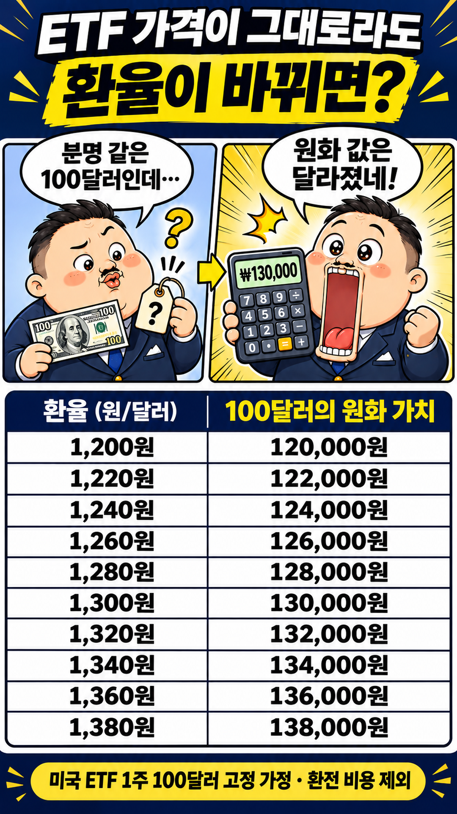
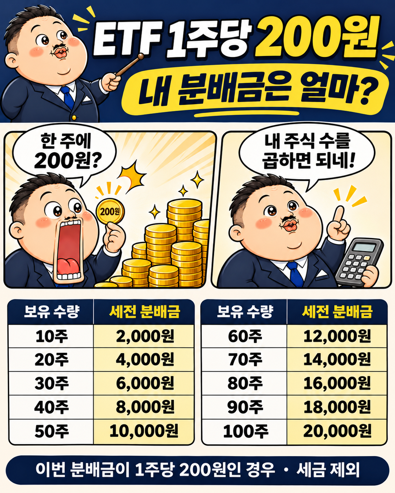
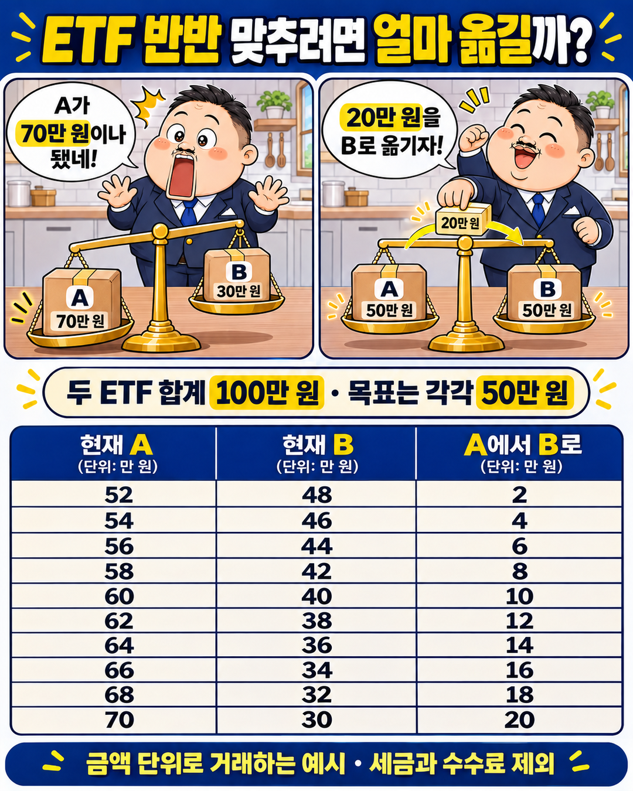
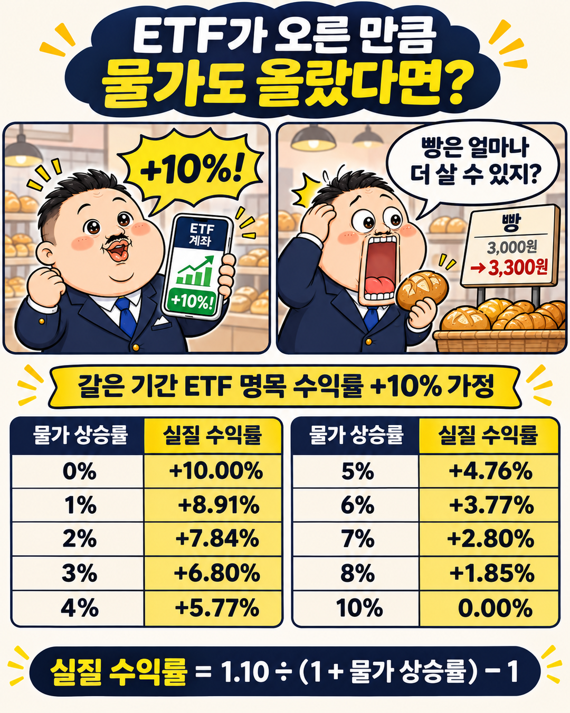
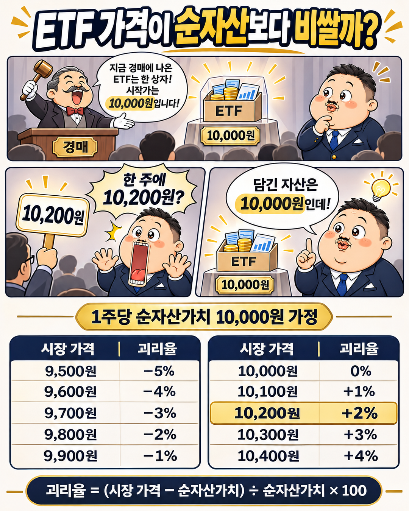
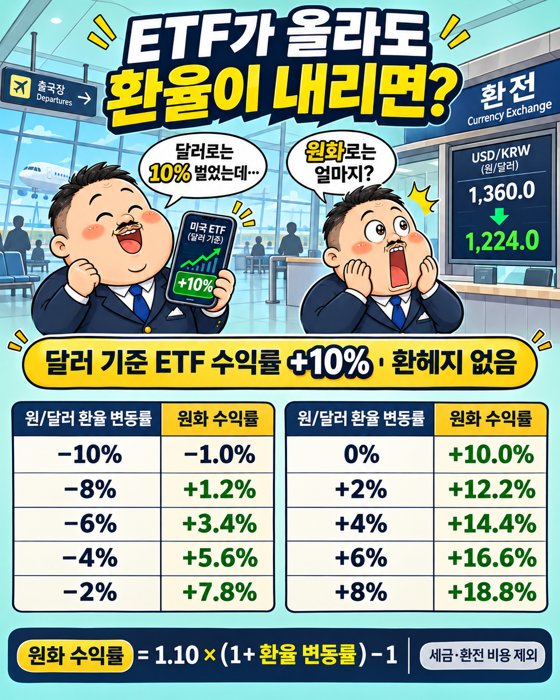
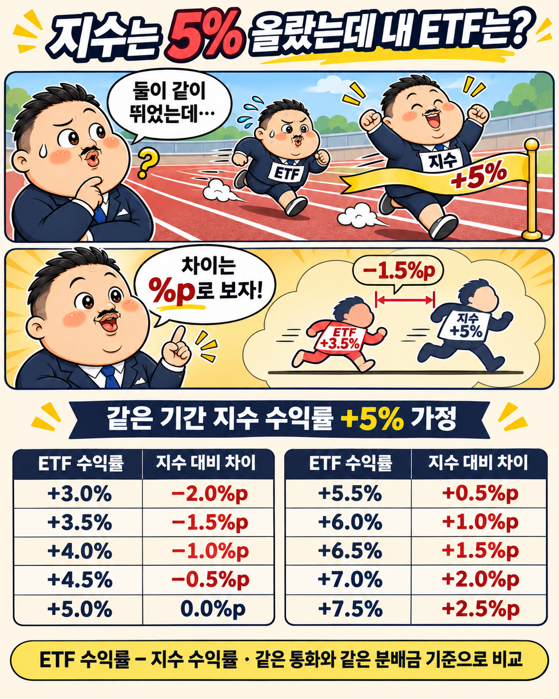
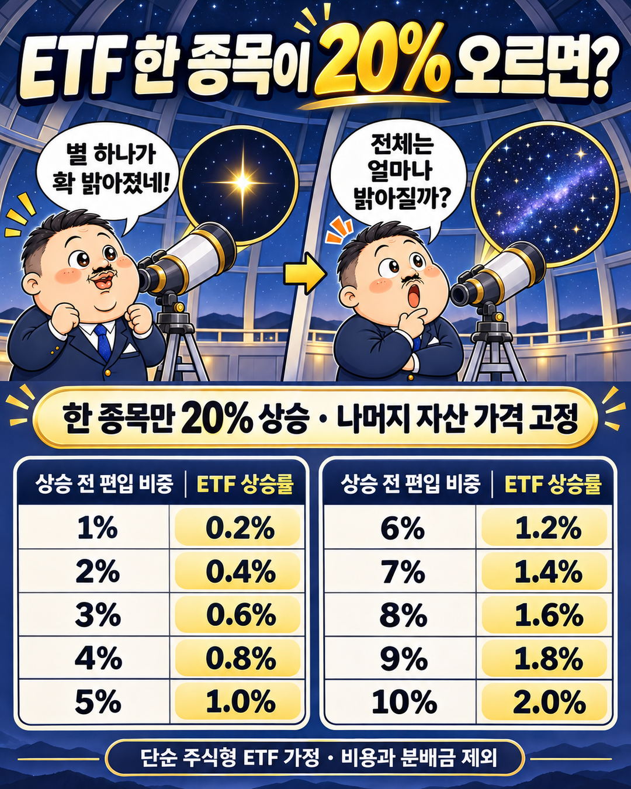
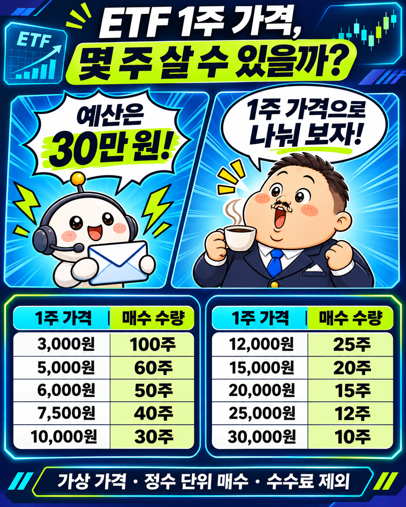
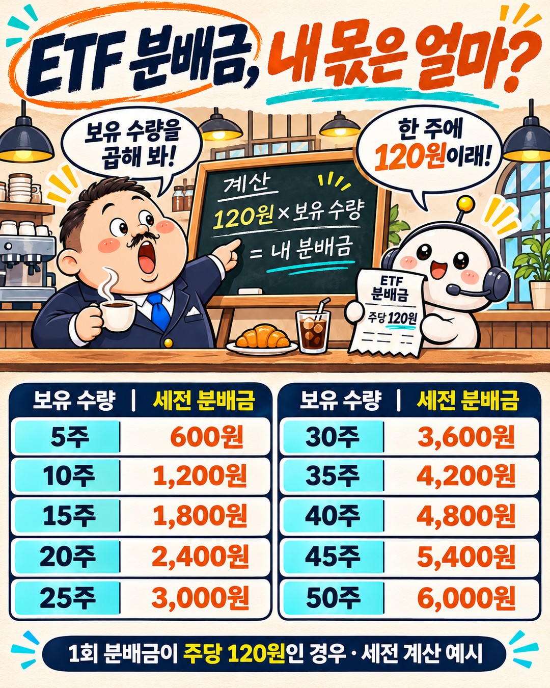

유튜브 ETF
ETF 한 장 만화




























자막 추출 결과 보기
채널명과 썸네일이 가려져 식별하지 못한 카드 2개는 집계에서 제외했습니다.
BrowserSkill 0.5.0에서는 Martik Finance 영상의 ‘스크립트 표시’를 열어 91행을 읽었습니다. 한시드 영상은 확장 탐색 중 오류가 났고 Chrome에서 5행을 읽었습니다. 같은 영상에서 Watch는 영어 자동 자막 43구간을 반환했습니다.